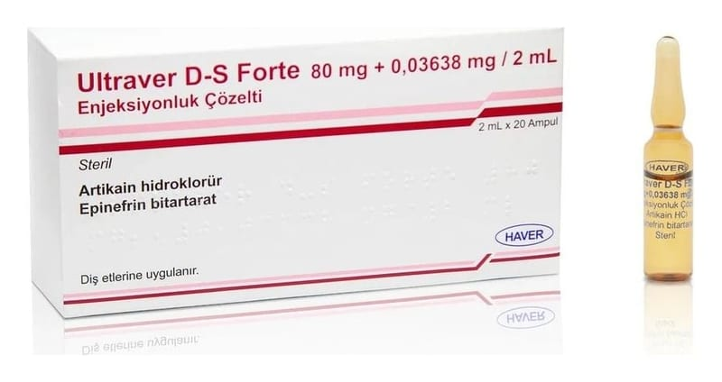

Ultraver D-S Forte 80 mg + 0,03638 mg / 2 ml Enjeksiyonluk Çözelti, 20 Adet

Ne için kullanılır
KT · Bölüm 1ULTRAVER D-S FORTE ʼnin içinde artikain hidroklorür ve epinefrin bitartarat etkin maddeleri bulunur. Ampul içindeki çözeltide 80 mg artikain hidroklorür ve 0.03638 mg epinefrin bitartarat vardır. Ambalajı içinde her biri 2 mL enjeksiyonluk çözelti içeren 20 ampul bulunur. ULTRAVER D-S FORTE ampul sadece dişle ilgili anestezide kullanılır.
ULTRAVER D-S FORTE lokal (bölgesel) anestezi yapan bir ilaçtır. Asitamid tipi bir lokal anesteziktir. ULTRAVER D-S FORTE bir infiltrasyon anesteziğidir. Anestezik etkisini çabuk gösterir ve güvenlidir.
ULTRAVER D-S FORTE aşağıdaki belirtilen durumlarda kullanılır:
Kuvvetli bir kanlanma bozukluğuna neden olan mukoza ve kemik müdahalelerinde, diş özü üzerindeki cerrahi müdahalelerde, desmodontitik ekstraskiyonlar gibi müdahalelerde ve kırık dişlerin çekiminde (osteotomi), uzun süreli cerrahi müdahalelerde, diş ve diş eti ile ilgili diğer müdahaleler (perkütan osteosentez, kist çıkarılması, kök ucunun çıkartılması), duyarlığı yüksek olan dişlerde kavite ve kron preparasyonları gibi müdahalelerde kullanılır.